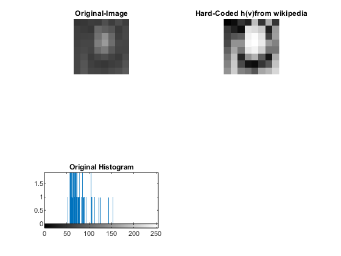
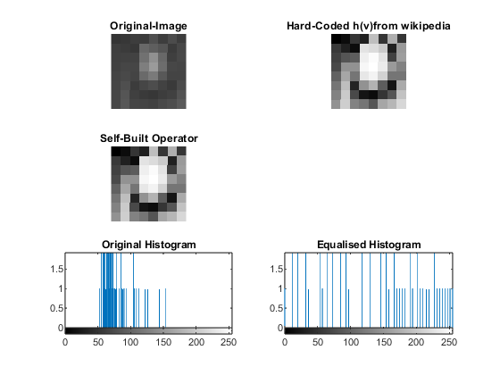
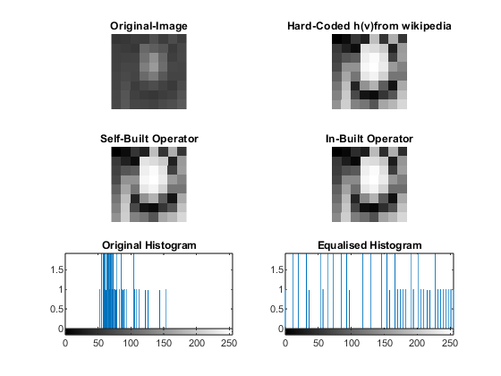

Contents
Histogram Equalization
Input: Image Output: Image (Histogram Equalised)
clc; clear all; close all;
Example(Wikipedia) - Hardcoded Histogram Equalisation
myImage = [52 55 61 59 79 61 76 61
62 59 55 104 94 85 59 71
63 65 66 113 144 104 63 72
64 70 70 126 154 109 71 69
67 73 68 106 122 88 68 68
68 79 60 70 77 66 58 75
69 85 64 58 55 61 65 83
70 87 69 68 65 73 78 90];
myImage = cast(myImage, "uint8");
subplot(3,2,1);
imshow(myImage);
title("Original-Image");
eq_img_1 = [0 12 53 32 190 53 174 53
57 32 12 227 219 202 32 154
65 85 93 239 251 227 65 158
73 146 146 247 255 235 154 130
97 166 117 231 243 210 117 117
117 190 36 146 178 93 20 170
130 202 73 20 12 53 85 194
146 206 130 117 85 166 182 215];
eq_img_1 = cast(eq_img_1, "uint8");
subplot(3,2,2), imshow(eq_img_1), title("Hard-Coded h(v)from wikipedia");
subplot(3,2,5), imhist(myImage), title("Original Histogram");
 Self-Built Histogram Equalisation Operation
[R,C] = size(myImage); counts = imhist(myImage); cdf_counts = cumsum(counts); cdf_min = cdf_counts(find(cdf_counts > 0, 1)); L = 256; % 8 bit image eq_img_2 = zeros(R,C, "uint8"); for row = 1:R for col = 1:C curr_pixel = myImage(row,col); h_v = round(((cdf_counts(curr_pixel + 1) - cdf_min)/((R*C)-cdf_min))*(L-1)); eq_img_2(row,col) = h_v; end end subplot(3,2,3), imshow(eq_img_2), title("Self-Built Operator"); subplot(3,2,6), imhist(eq_img_2), title("Equalised Histogram");
In-built operator
eq_img_3 = histeq(myImage);
subplot(3,2,4);
imshow(eq_img_3);
title("In-Built Operator");
